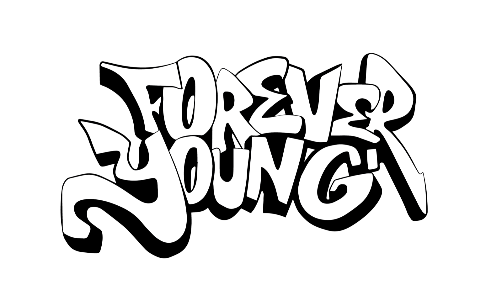
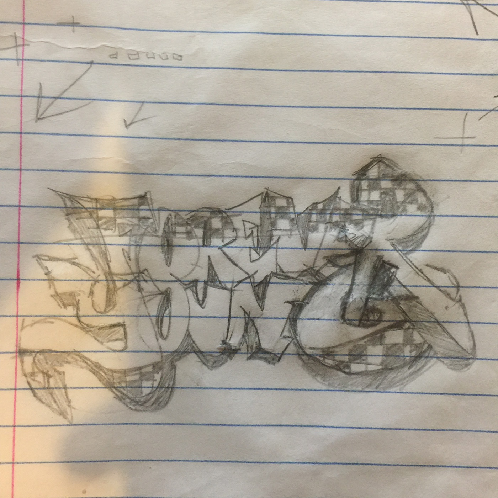
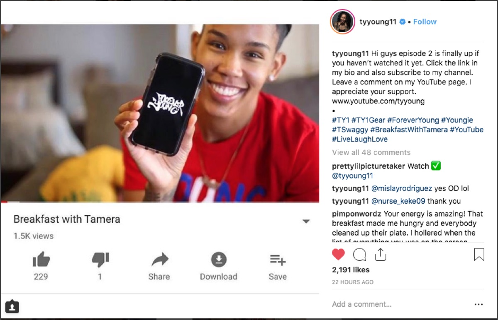
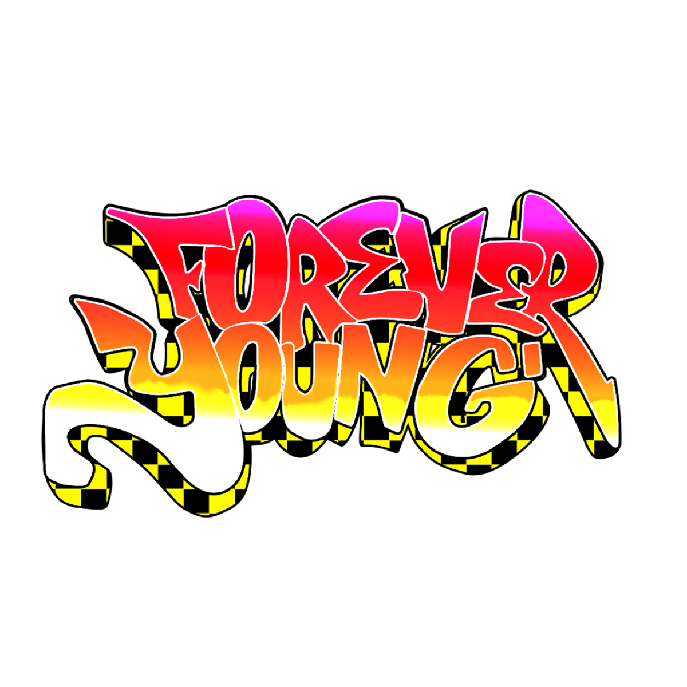

Forever Young
TY Young, WNBA player · Logo and lettering
- Goal
- Introduce her Forever Young line of TY1 Gear apparel
- Delivered
- Forever Young logo, black and white vector
- Budget
- $300 – $500 (logo mark only)
The brief
TY Young, a WNBA star, came to me by referral from a previous client. She was launching Forever Young, a new line of her TY1 Gear apparel, and needed a hand-lettered logo with real graffiti attitude to carry it.
How it was made
It started as a pencil sketch on notebook paper, working out the letter shapes, the shadow and a checkerboard pattern. From there I redrew it as clean black and white artwork that holds up on a phone screen, on apparel and on a banner. The sketch's checkerboard became the shadow in a full-color version.
How it went
TY introduced the logo herself, holding it up on her phone in an Instagram post for her Breakfast with Tamera series, tagged #TY1Gear and #ForeverYoung. The post drew over 2,000 likes.